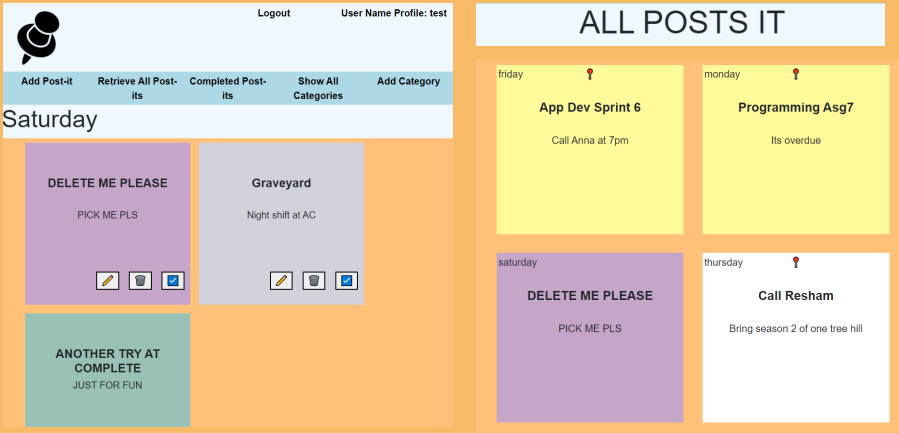

This project made in collaboration with Angela Shanmugam and Sarim Ali Syed as part of Talib Hussain's Web Programming I course. Using Node.js, MySQLServer and JavaScript, we created a daily dashboard where users could track their daily tasks by adding post-its to each day. Post-Its can be modified, removed, or marks as completed using the button provided. Once marked as completed, the user's post-Its is removed from the main dashboard and only accessible from the “Completed Post-Its” page. Each Post-It is color-coded by the categories the users had previously added to their account.
User Dashboard and All-Posts-It Page
